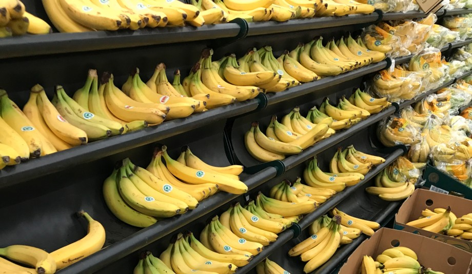

The world’s global environmental crisis is threatening our very existence. Natural resources are being exploited beyond control, and pollution from human activities is destroying the planet. In October 2018, the UN IPCC’s landmark report warned that without societal transformation and rapid implementation of ambitious greenhouse gas reduction measures, limiting warming to 1.5°C will be exceedingly difficult - if not impossible - to achieve. Global warming is causing extreme weather, rising sea levels, and prolonged droughts, putting pressure on food crops and causing detrimental biodiversity loss.

It is estimated that the future population “will require a substantial increase of 70% in global food production by 2050, or an additional quantity of 1 billion tonnes of cereals and 200 million tons of meat” (FAO, 2009). In order to support growing demand, ensuring sustainable consumption and production patterns (SDG 12) is vital, with developed countries taking the lead. SDG 12 is closely related to climate change mitigation, sustainable agriculture, life on land and life below water. Ecolabels provide simple confirmation for non-experts that products meet certain environmental standards (e.g. Fairtrade). “Consumers are demanding them, but when you look at how many certifications there are, it’s hard to understand the labels and what it all means,” said Mikkel Andersen, global strategic services director at Sustainia.
At SustainLabel we are motivated to work towards a solution. We consider that consumption demand from some of the world’s most advanced economies is driving this climate catastrophe. The culture of excessive consumerism, demand for fast and cheap goods and diet choices all hinder the transition to sustainability. Upon realisation of our personal responsibility, we decided to enter this Challenge with a project that builds upon the already existing sustainability framework of ecolabel schemes and certified products!